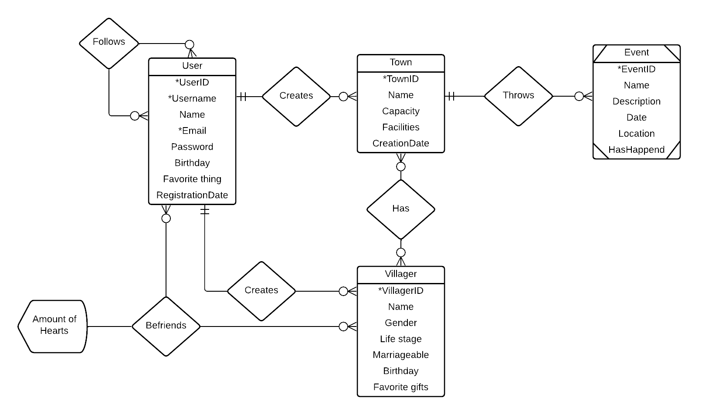

Deze applicatie is gemaakt in het kader van het vak 'Clientside web frameworks' van Avans Hogeschool Breda.
Om Stardew Valley™ spelers dichterbij elkaar te brengen wil ik een applicatie maken waarbij het mogelijk is om dorpen te creëren. Deze dorpen liggen in Stardew Valley, vlak bij het dorp waar het spel zich afspeelt. In de gemaakte dorpen kunnen gebruikers verschillende bewoners toevoegen die ze ook zelf maken. Vervolgens is het ook mogelijk om events te maken die in hun eigen gemaakte dorpen plaats vinden. Ook moet het mogelijk zijn om bevriend te raken met de bewoners. Dit zal bijgehouden met een friendship level. Daarbij kunnen gebruikers ook de bewoners van andere gebruikers zien en deze aan hun eigen dorpen toevoegen. Gebruikers kunnen elkaar volgen en elkaars bewoners en dorpen bekijken.
Studentnummer: 2187226
In de onderstaande diagram is er te zien dat een gebruiker nul of meerdere dorpjes kan hebben. Deze dorpjes kunnen nul of meer bewoners hebben die de gebruiker kan bevrienden. Daarbij kan een dorp ook nul of meer events organiseren. Voor de gebruiker is het mogelijk om alle entiteiten te creëren. Voor een bewoner is er voor birthday gekozen voor een string omdat in het spel de bewoners geen echte datum hebben voor hun verjaardag maar een seizoen met een dag. Dit wilde ik voor de bewoners van de dorpjes ook doen. De relatie tussen de bewoners en gebruikers en tussen de gebruikers wordt beide bijgehouden door neo4j, het vriendschapslevel zit gekoppeld aan de relatie tussen de bewoners en de gebruikers.
Hier verwoord je in de vorm van userstories de functionaliteit van jouw applicatie.
| Nr | Userstory | toelichting + geimplementeerd door |
|---|---|---|
| 1 | Als gebruiker wil ik kunnen registreren voor de applicatie. Zodat ik deze kan gebruiken. | Een gebruiker moet een account kunnen aanmaken. Geimplementeerd door user entiteit |
| 2 | Als gebruiker wil ik kunnen inloggen op de applicatie zodat ik deze kan gebruiken. | Een gebruiker moet na het registreren de inloggegevens kunnen gebruiken om mee in te loggen. Geimplementeerd door user entiteit |
| 3 | Als ingelogde gebruiker wil ik mijn eigen dorpen kunnen maken, ophalen, wijzigen en verwijderen. Zodat deze up-to-date blijven. | Town CRUD, Geimplementeerd door town entiteit |
| 4 | Als ingelogde gebruiker wil ik mijn eigen bewoners kunnen maken, ophalen, wijzigen en verwijderen. Zodat deze up-to-date blijven. | Villager CRUD, Geimplementeerd door villager entiteit |
| 5 | Als ingelogde gebruiker wil ik mijn eigen events voor mijn eigen dorpen kunnen maken, ophalen, wijzigen en verwijderen. Zodat deze up-to-date blijven. | Event CRUD, Geimplementeerd door event entiteit |
| 6 | Als ingelogde gebruiker wil ik andere gebruikers kunnen volgen zodat ik kan zien wat zij allemaal gemaakt hebben. | Geimplementeerd door user entiteit |
| 7 | Als ingelogde gebruiker wil ik bewoners van de mensen die ik volg kunnen zien en aan mijn eigen dorp kunnen toevoegen, zodat ik mijn dorpjes kan vergroten met bewoners van anderen. | Geimplementeerd door villager entiteit |
| 8 | Als ingelogde gebruiker wil ik de bewoners kunnen zien van de mensen die mijn volgers volgen. | Een ingelogde gebruiker kan deze bewoners zien en toevoegen aan hun eigen dorp. Geimplementeerd door villager entiteit. |
| 9 | Als ingelogde gebruiker wil ik vrienden kunnen worden met mijn eigen bewoners maar ook met die van andere gebruikers. | Geimplementeerd door villager entiteit |